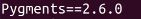
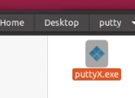
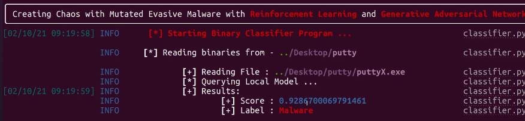
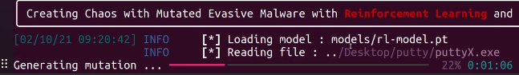
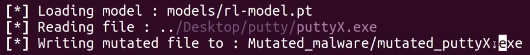
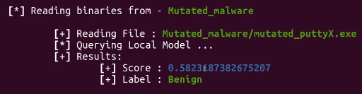

Se trata de una aplciación basada en machine learning para ofuscar binarios maliciosos para ser menos detectados por soluciones antivirus.
https://github.com/CyberForce/Pesidious
La instalación es muy sensible debido a las dependencias que utiliza por lo que lo más óptimo sería instalar una máquina linux limpia y hacer la instalación únicamente de esta herramienta.
Con esto claro comenzamos:
git clone https://github.com/CyberForce/Pesidious
Instalamos python y aquí comienzan los problemas y motivos de la instalación aislada ya que utiliza python 3.6 y no otro.
Añadimos repositorio de versiones antiguas python.
sudo add-apt-repository ppa:deadsnakes/ppa
sudo apt-get update
Instalamos python y pip
sudo apt-get install python3.6
curl https://bootstrap.pypa.io/get-pip.py | sudo -H python3.6
En el directorio de Pesidious modificamos lo siguiente:
pico pip_requirements/requirements.txt
Debemos encontrar la línea donde indique la versión de pygments y poner la 2.6.0

Instalamos requerimientos:
python3.6 -m pip install -r pip_requirements/requirements.txt
Si no hay problemas debería estar funcionando.
Necesitamos el binario con malware que en este caso será un putty.exe con un backdoor creado con msfvenom.

python3.6 classifier.py -d ../Desktop/putty

Detecta que es malware con una precisión del 92% por lo que es altamente detectable por soluciones antivirus.
python3.6 mutate.py -d ../Desktop/putty


Vamos a revisarlo con el clasificador:

Lo detecta como benigno con un 58% de probabilidad, lo que significa que sería detectado como malware un 42% de las veces.